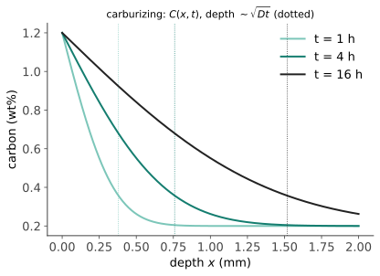

热力 II · 扩散：原子的迁徙学
相图指出的平衡要靠原子走过去才能实现——扩散是固态世界唯一的搬运方式，也是一切热处理、渗碳、烧结、半导体掺杂的时钟。本页三件事：Fick 定律（宏观唯象）、机制与 Arrhenius（微观定价）、以及工程上最好用的一根尺子——\(\sqrt{Dt}\)。
1. Fick 定律（宏观语言）
第一定律（稳态）：\(J = -D\,\dfrac{\partial C}{\partial x}\)——顺浓度梯度搬运，\(D\)（m²/s）是搬运效率。第二定律（非稳态，守恒 + 一式即得）：
——就是热方程（🔗 数学站 pde-02 全套理论直接接管：误差函数解、高斯核、\(\sqrt{t}\) 标度）。表面恒浓度的经典解（渗碳/渗氮/掺杂全用它）：

万能尺子：扩散影响距离 \(x \sim \sqrt{Dt}\)（🔗 布朗运动的 \(\sqrt t\)——数学站随机过程/sde 线的同一根尺子：扩散本就是原子的随机游走）。工艺速算：渗层要加倍 ⇒ 时间四倍；"多深要多久"一律先用它估量级再谈精确解。
2. 微观机制与 Arrhenius（温度的独裁）
两种走法：间隙机制（小原子 C、N、H 在间隙里穿行——快）；空位机制（置换原子等空位换位——慢，且依赖空位浓度：结构 III 的指数曲线在此入股）。两个热激活因子相乘，总账仍是 Arrhenius：
数字感（三个 D 的震撼对比，~900 °C）：C 在 γ-Fe（间隙）~\(10^{-11}\)；Fe 自扩散（空位）~\(10^{-16}\)；室温下金属自扩散 <\(10^{-40}\) m²/s——间隙比置换快五个数量级、高温比室温快几十个数量级。两条工程直觉由此：渗碳可行而"渗镍"不可行（要靠镀层+互扩散）；室温下金属组织基本冻结（这就是热处理淬火"锁住"组织的原因，也是为什么固态相变都要加热）。
Arrhenius 作图法：\(\ln D\) 对 \(1/T\) 作图得直线、斜率给激活能 \(Q\)——材料动力学万能的实验分析法（蠕变、氧化、反应速率同款；🔗 化学反应速率、物理站统计力学的玻尔兹曼因子——一个 \(e^{-Q/RT}\) 统治所有热激活过程）。
捷径网络：晶界扩散 ≫ 体扩散（结构 III"高速路"的定量版：激活能约为体扩散的一半）、表面更快、位错管道居中——低温下捷径主导（纳米晶与烧结的动力学舞台，工艺 II）。
3. 三个工程现场
- 渗碳齿轮：930 °C × 6 h → 渗层 ~1 mm（图 6.1 的账），表面高碳淬火成马氏体耐磨、心部低碳保持韧性——梯度材料的元老；
- 半导体掺杂：硅中掺磷/硼的预沉积+推进两步全是 erfc/高斯解的应用（🔗 micro 站制程页——那边讲流程、这边讲方程）；现代浅结改用离子注入+快速退火，正是因为热扩散"太会走"控制不住；
- 均匀化退火：铸锭枝晶偏析（热力 I 的欠账）的抹平时间 \(t \sim L^2/D\)（\(L\) = 偏析间距）——细化组织使 \(L\) 减半、退火时间省四分之三：尺度决定时钟。
4. 反直觉清单
- 扩散不需要浓度梯度也在发生（自扩散——梯度只是给了净流量方向）；真正的驱动力是化学势梯度：上坡扩散（往浓处走）在调幅分解里真实存在【研：spinodal，Cahn–Hilliard】——"Fick 定律是常态不是定律"；
- 固体里的原子远非静止：熔点附近每个原子每秒跳位上百万次——固体只是"跳得慢的液体"；
- 加热 100 °C 常抵得上时间乘几十倍——温度是指数杠杆、时间只是线性杠杆：改工艺先动温度。
【研】对标 Shewmon《Diffusion in Solids》；Kirkendall 效应（互扩散速度不等 ⇒ 标记面移动——空位机制的直接证据）、Darken 方程、非稳态数值解（数学站数值线）是研究生功课。
方向（热力学）与速度（扩散）都有了，合起来就能回答材料学最戏剧性的问题：组织怎么变、怎么被我们操纵——相变与热处理。